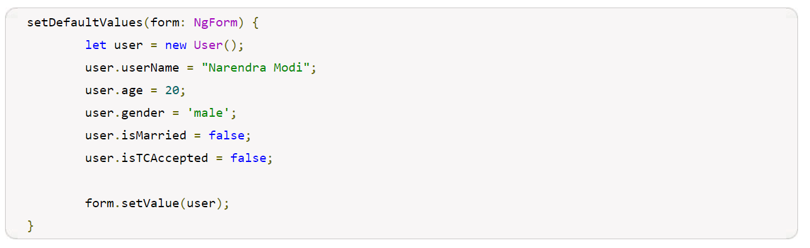

<div class="container-fluid">
  <div class="jumbotron bg-secondary text-white">
    <h3 class="text-center text-warning">Angular Template driven forms</h3>
    <p>Angular template-driven form is the form where we write controls, validations and logics in HTML template.
      Angular has
      two approach of creating forms i.e. reactive form and template-driven form. In reactive form, the logic of
      creating
      forms and validations are handled in component class whereas in template-driven form the logic of creating forms
      and
      validations are handled in HTML template. In reactive form, validation is handled by functions in component class
      whereas in template-driven form validation is handled by directives. We should use template-driven form where
      small form
      is needed and no boilerplate code of logic is required. Angular provides NgForm and NgModel directive to create
      template-driven form. Here on this page we will create a template-driven form with text box, single select and
      multiple
      select option, radio button and checkbox.</p>

    <h4 class="text-warning">Steps::</h4>
    <h4 class="text-warning">1.Imports FormsModule</h4>
    <p>To create Template-driven form, we need to import <small>
        <mark>FormsModule</mark>
      </small> in our application module. <small>
        <mark>FormsModule</mark>
      </small> provides <small>
        <mark>NgForm</mark>
      </small> and <small>
        <mark>NgModel</mark>
      </small>
      directive that is used to create template-driven form.</p>
    <h4 class="text-warning">2.NgForm</h4>
    <p>Template-driven form is created using <small>
        <mark>NgForm</mark>
      </small> that creates top-level <small>
        <mark>FormGroup</mark>
      </small> instance and binds it to a form to track
      aggregate form value and validation status. <small>
        <mark>FormGroup</mark>
      </small> tracks the value and validity state of a group of form control. To
      use <small>
        <mark>NgForm</mark>
      </small> we need to import <small>
        <mark>FormsModule</mark>
      </small> in application module. As soon as we import <small>
        <mark>FormsModule</mark>
      </small> in application module,
      the <small>
        <mark>NgForm</mark>
      </small> will be active in all <small>
        <mark>form</mark>
      </small> tags. In case we don’t want to make <small>
        <mark>NgForm</mark>
      </small> directive active in form tag by default
      then add <small>
        <mark>ngNoForm</mark>
      </small> in the <small>
        <mark>form</mark>
      </small> tag.
      Exporting <small>
        <mark>NgForm</mark>
      </small> directive into a local template variable is optional but it is useful to access aggregate value and
      validity status of the form. <small>
        <mark>NgForm</mark>
      </small> is exported in local template as <small>
        <mark>#userForm="ngForm".</mark>
      </small></p>

    <p>Using local template variable userForm, we can access form in our HTML template as following.</p>
    <span class="text-warning">userForm.value:</span> <span>It returns form value. It means we get an object containing
      the
      values of all the fields used within form tag.</span> <br>

    <span class="text-warning">userForm.valid:</span><span>It returns boolean value. When the value is true then form is
      valid. Form is said to be valid if all the fields returns
      validity true.</span> <br>
    <span class="text-warning">userForm.touched:</span><span>It returns boolean value. If the value is true, it means
      user has entered value at least in one field.</span> <br>
    <span class="text-warning">userForm.submitted:</span><span>It returns boolean value. If the value is true, it means
      form has been submitted.</span><br> <br>

    <h4 class="text-warning">3.NgModel</h4>
    <p><small>
        <mark>NgModel</mark>
      </small> directive creates a <small>
        <mark>FormControl</mark>
      </small> instance from a domain model created in class and binds it to a form control
      element. <small>
        <mark>FormControl</mark>
      </small> keeps the track of user interaction and validation status of the form control. <small>
        <mark>NgModel</mark>
      </small> can be used
      standalone as well as with the parent form as template-driven form.
      Find the code to use NgModel.</p>

     <br> <br>
    <p>Now look into <small>
        <mark>#uname="ngModel"</mark>
      </small> . Here <small>
        <mark>uname</mark>
      </small> is a local template variable that can be used to get form control
      state and
      validity with properties such as <small>
        <mark>value</mark>
      </small> , <small>
        <mark>valid</mark>
      </small> , <small>
        <mark>invalid</mark>
      </small> etc.
      <small>
        <mark>NgModel</mark>
      </small> can be used as one-way binding and two-way binding. In one way binding we use <strong>[ ]</strong> sign
      and when value changes in
      domain model in the class then that it is set to view also. In two-way binding we use <strong>[( )]</strong> sign
      and the value changes
      in domain model is set to view and values changes in view is also set to domain model.
    </p>

    <h4 class="text-warning">4.NgForm with NgModel</h4>
    <p>In template-driven form we need to use <small>
        <mark>NgForm</mark>
      </small> with <small>
        <mark>NgModel</mark>
      </small> directive. <small>
        <mark>NgForm</mark>
      </small> is used with form tag and <small>
        <mark>NgModel</mark>
      </small> is
      used
      with form elements such as text, radio button, checkbox, select box etc. When we use ngModel with form elements,
      we have
      also to supply a <small>
        <mark>name</mark>
      </small> attribute to register that control with parent form using that name.
      When we are using parent form, we need not to use two-way binding to get form fields values in our class. We can
      pass
      form local template variable such as <small>
        <mark>userForm</mark>
      </small> to our submit method such as <small>
        <mark>onFormSubmit(userForm)</mark>
      </small> as given below.
    </p>
    
    <p>On form submit, the form values can be accessed in class as given below.</p>
    
    <p>If we use neither one-way binding not two-way binding still we need to use ngModel attribute in fields when using
      with
      parent form as given below.</p>
    <br>
    <p>If we will not use <small>
        <mark>ngModel</mark>
      </small> attribute in fields such as</p>
    
    <p>Then this field will not be registered with parent form and its value will not be passed to our class on form
      submit.</p> <br>

    <strong class="text-warning">Case- 1 :</strong><span>Here we are using two-way binding in parent form.</span>
    
    <p>If we want form fields values using domain model then we can use two-way binding. On form submit we can also
      access form
      values using <small>
        <mark>NgForm</mark>
      </small> in our class. In case of parent form, most of the time, we need not to use two-way binding because
      we can access values in our class using <small>
        <mark>NgForm</mark>
      </small> itself. <small>
        <mark>name</mark>
      </small> attribute is required to register control with form.</p>

    <strong class="text-warning">Case-2 :</strong><span>Here we are using one-way binding in parent form.</span>
    
    <p>We should use one-way binding in the scenario where we want to pre-populate form fields. name attribute is
      required to
      register control with form.</p>

    <strong class="text-warning">Case-3:</strong><span>Here we are using neither one-way nor two-way binding.</span>
    
    <p>To register child control with the form, we need to use ngModel as field attribute. If we are using neither
      one-way nor
      two way binding, still we need to use ngModel attribute so that the field can be registered with parent form
      otherwise
      the field value will not be passed on form submit. name attribute is required to register control with form.</p>

    <h4 class="text-warning">5.Submit Form</h4>
    <p>We use local template variable of <small>
        <mark>NgForm</mark>
      </small> to submit form data with <small>
        <mark>ngSubmit</mark>
      </small> . Look into HTML form code.</p>

    
    <p>Here when form is submitted, local template variable is passed to our onFormSubmit method.</p>
     <br>
    <p>Using <small>
        <mark>controls[],</mark>
      </small> we can access the form field value by field name in our class as following.</p>
     <br>
    <p>Here userName, age, gender are the form fields names.
      If we have a user class with fields names same as form control names then we can get form value as user class
      object.
      Suppose we have a user class as following.</p>

    
    <p>We can get form vaues after submit as <small>
        <mark>User</mark>
      </small> object as following.</p>
     <br> <br>

    <h4 class="text-warning">6.Reset Form</h4>
    <p>To reset template-driven form, <small>
        <mark>NgForm</mark>
      </small> provides <small>
        <mark>resetForm()</mark>
      </small> method that is called as following.</p>
    
    <p>To call the above function, create a button in UI.</p>
    
    <p>If we want to reset form with some default values, then assign the default values with form control name of the
      form</p>
    
    <h4 class="text-warning">7. Validations</h4>
    <p>To use Angular validations we need to disable HTML 5 validation in our form using <small>
        <mark>novalidate</mark>
      </small> attribute. Find the text
      box with Angular <small>
        <mark>required</mark>
      </small> and <small>
        <mark>minlength</mark>
      </small> validations.</p>
     <br> <br>
    <p>To get form control object, we need to export <small>
        <mark>ngModel</mark>
      </small> into local template variable as <small><mark>#userName="ngModel".</mark></small> Now using
      <small>
        <mark>userName</mark>
      </small> we can get form control value, validity status and error object. Error object is obtained as <small>
        <mark>userName.errors</mark>
      </small>
      and to get particular validation such as <small>
        <mark>required</mark>
      </small> and <small>
        <mark>minlength</mark>
      </small> , we write code as <small>
        <mark>userName.errors.required</mark>
      </small> and
      <small>
        <mark>userName.errors.minlength</mark>
      </small> to display error message accordingly.
    </p>

    <h4 class="text-warning">8. Set Value Dynamically</h4>
    <p>To set value in template-driven form dynamically, <small>
        <mark>NgForm</mark>
      </small> provides <small>
        <mark>setValue</mark>
      </small> method. Suppose we have following class whose
      field names are matching with our template-driven form elements names.
      <strong class="text-dark">user.ts</strong>
    </p>

    
    <p>We can set values to the form view dynamically as following.</p>
    

    <p> <small>
        <mark>setValue</mark>
      </small> sets value to each and every form elements of the given form and if we miss any form element name in
      <small>
        <mark>setValue,</mark>
      </small>
      it will throw error.
    </p>


    <app-user></app-user>

  </div>
</div>